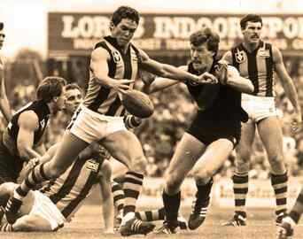

< < < Back
How Social Justice Warriors Ruined Australian Football – Return Of Kings
For many years, nothing epitomised Australian masculine culture more than Australian football. Hardy men engaged in rugged physical combat, cheered on by thousands of beer-drinking fans, revelling in the blows, the matehood, and the camaraderie.
Women also attended games, of course, but were very much in the background. This was a display of masculinity, and men quite rightly took centre stage.
The beginning of the decline
Things have definitely changed. From the early 2000s, the AFL made a deliberate push to court female fans. Whether they did this for financial reasons or because they felt the ever-increasing pressure of creeping political correctness in Australian society is unclear.
It started with a token female on TV panel discussions.
Then they started commentating live games.
Then they became umpires.
Then they became coaches.
Out went the cheerleaders.
Feminists complained that there was no female AFL, despite women’s football only being played by a tiny minority of untalented lesbians with serious gender identity issues.
Numerous outspoken female “experts” who had never actually played the game emerged in the media. Coaches and players started to resemble White House spokesmen, and carefully avoided anything that might be considered offensive. For Australian men used to calling a spade a spade, this made the game feel incredibly sterile.
Why is Australian football doing this to itself?
We’ve also seen the level of physicality limited (much like the NFL and MLB) so it’s more politically correct and sensitive to the growing numbers of mangina and female fans.
Feminism (which most Australian women unfortunately identify with) and political correctness go hand in hand. When you placate feminist women and grant them token positions, you open the door to an endless barrage of left-wing social justice nonsense, as male Australian sports fans are finding out to their great displeasure.
The AFL has become one of the most powerful causes for “progressive” change in Australian society, with social justice activism now almost as much a part of the AFL as the games themselves. Sound ridiculous? The following are already in place or being actively pursued, and receive extensive media commentary where the left-wing agenda is rammed down our throats:
Women’s Round
Gay Pride Round
Indigenous Round
Multicultural Round
Behold the consequences of placating SJWs


The changing face of Australian Football… yes, that really is a rainbow of footballs to promote gay pride
We are now seeing the disastrous consequences of disproportionately catering to women and allowing them to exert undue influence over a male-orientated activity. Female crowds are up, but the AFL has alienated its traditional supporter base, with overall attendance declining. The AFL is ignoring real fans to placate minorities by pushing a left-wing political agenda, and the simmering tension finally exploded this year.
The main catalyst has been the divisive behaviour of star player and former Australian of the Year Adam Goodes. Rather than be recognised for his outstanding sporting talent and as a symbol of reconciliation, Goodes has used his position to dig up old wounds and inflame racial tension.
He said Australia Day should be renamed “Invasion Day”, and handpicked a 13 year old girl out of the crowd, had her frogmarched out of the stadium by security, and denounced her as the “face of racism” in Australia. Ever since then, the crescendo of boos at games has gotten ever louder as Goodes’ war on his own country continued, and Goodes recently left the game altogether to contemplate retirement.
Adam Goodes: great footballer, but a first-rate dickhead – and yes, I would say the same thing if he was white
The social justice warrior crowd, led by Australia’s rabid left-wing media, has gone ballistic, citing this as irrefutable evidence of endemic racism in Australia. It’s a case of “the enemy of my enemy is my friend,” with the “enemy” of course being the heterosexual white male – the majority of AFL supporters.
OK, there might be fans that boo Goodes because they are racist, and that is obviously unacceptable. However, the vast majority boo Goodes because he’s a wanker. Seriously, completely unprovoked, the guy did a war dance and threw a fake spear at the crowd – highly inflammatory behaviour – and he is surprised when he gets a reaction? If all fans are so racist, how do SJW’s explain the fact that other aboriginals such as Eddie Betts and Cyril Rioli are crowd favourites?
Goodes throws his imaginary spear at the crowd
The AFL is a microcosm of Australia, which has become a seething pit of self-loathing and political correctness. A truly masculine activity like Australian Football was the final frontier for SJWs, who are thrilled that so many people in Australia now seem to hate themselves and play the victim card as much as they do. What the fuck happened?
The media’s role

Feminist commentator Susie O’Brien: about as knowledgeable about football as I am about Sex and the City
In Australia, mainstream media gives deranged feminists like Susie O’Brien regular platforms to spout their hatred of all things male on a daily basis. O’Brien even had the gall to try to get long-standing red pill male Sam Newman sacked from the sport he has contributed so much to for daring to deviate from the social justice script.
It’s the hypocrisy from the bleeding heart mob which is especially galling. When a male commentator such as Newman passionately implores us to forget politics and focus on the game, he is vilified as a “privileged white male,” a “dinosaur” who “must retire.”
So much for tolerating people of a different demographic! You don’t have to be Australian to recognise the typical left-wing opponent censorship campaign, I’m sure.
For my non-Australian friends, this is Sam Newman. I’m sure it’s obvious why feminists are desperate to kick him off the air and out of the game!
For the record, this is what Sam Newman said:
I am told the unwashed left their grubby little fingerprints over what I said last week and they played the race card … what I said last week had nothing to do with race.
And I notice this week Geelong is going to run out between a mutual banner with the Swans.
Why don’t they let the Swans get the first couple of goals just so they feel good about themselves and see if they can give them a lift up and maybe just stop the Cats from getting in the finals?
So then we get to St Kilda who are thinking of having a gay pride game. This is just using the competition again as some political agenda.
Why don’t we have a boat people day next week or what about we have a transgender round and we will get Caitlin Jenner to sing at the grand final?
I am a white, Anglo Saxon, male, Protestant, heterosexual and I am waiting for my day to come, and when it does I will be first in line to say show stupid is this?
Couldn’t we just leave the game to try and get hold of itself and I would suggest St Kilda and Geelong and the Swans worry about a game plan that might get them into the finals without worrying about every other political cause on earth.
As a former player and media commentator for many years, Newman absolutely has earned the right to speak to a large audience on this issue, and he is utterly correct. He’s a red pill guy not afraid to speak his mind, something that is becoming increasingly rare Down Under, and he’s contributed far more to football than some talentless feminist hack like Susie O’Brien ever could.
However, now everybody in Australia is talking about sexism, racism and homophobia in football – anything but the actual game itself! The grossly overrepresented left-wing view in sports has eerie parallels with our political sphere.
Nothing to see here…
Nobody in the left-wing media is talking about the economy, our national debt, cost of living, unemployment, crime, the family breakdown and other serious issues which affect a great percentage of the population. Instead it is all about gay marriage, “refugees” (aka illegal immigrants), imagined sexism and other fringe issues that in reality affect only a tiny minority.
The Goodes saga and the AFL’s constant pandering to social justice warriors reflect the pathetic direction Australia has taken over the past decade or so. Let the minority dictate the agenda. Shut down all criticism. You’re just booing him because you’re racist; you’re only criticising me because you are sexist. Heck, even our last Prime Minister, the most powerful person in the country, tried to play the victim card.
I used to love AFL football, but I’m sick of the constant bombardment of left-wing politics. These days I enjoy my Australian football at the grass roots level only, watching the Victorian Amateur Football Association. I no longer want to watch the game played at the highest level.
I miss the sport, but because Australian men no longer have mainstream masculine activities untainted by PC feminism, it’s a price I’m prepared to pay.
Read More: Social Justice Warriors’ Updated Version Of The Seven Deadly Sins


{kind=link}
{kind=link}
{kind=link}
{kind=link}
{kind=link}